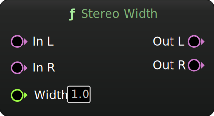

Stereo Width
Stereo width adjustment (0-200%), using mid-side processing.
Inputs
| Name | Description | Type |
|---|---|---|
| In L | Left channel. | Audio |
| In R | Right channel. | Audio |
| Width | Stereo width factor ranging from 0 to 200% (0 - 2). | Float |
Outputs
| Name | Description | Type |
|---|---|---|
| Out L | Left channel of the adjusted stereo output signal. | Audio |
| Out R | Right channel of the adjusted stereo output signal. | Audio |